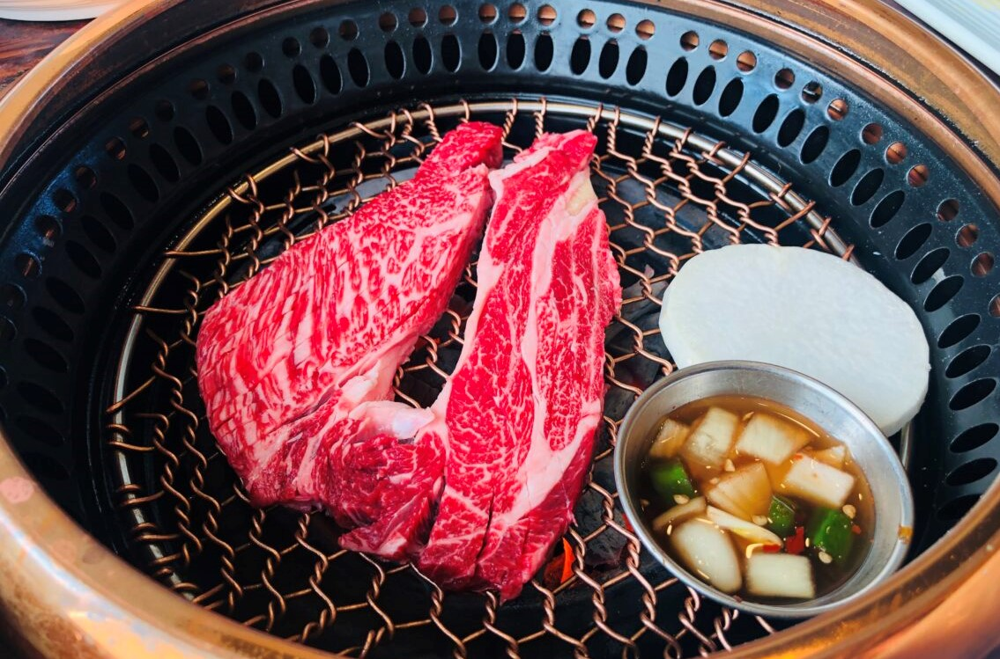
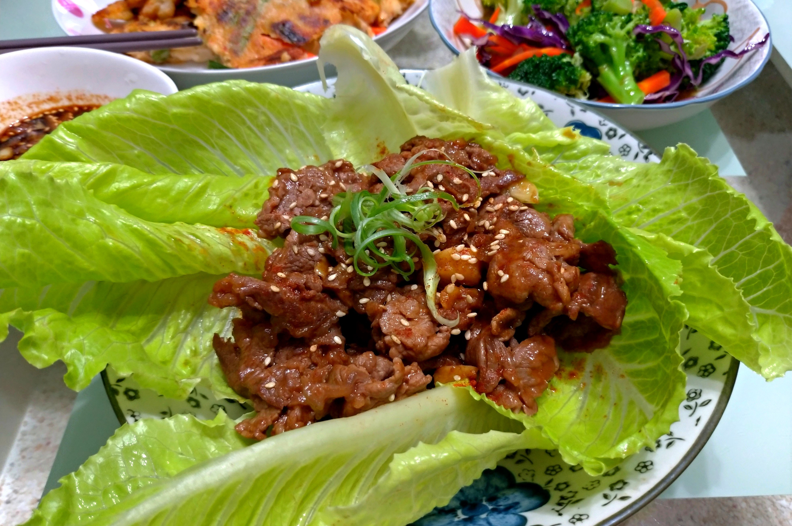
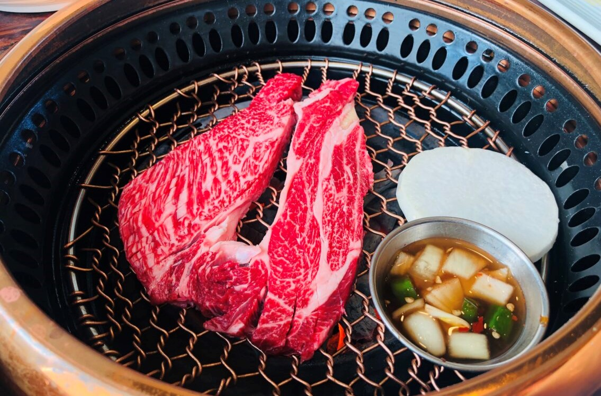
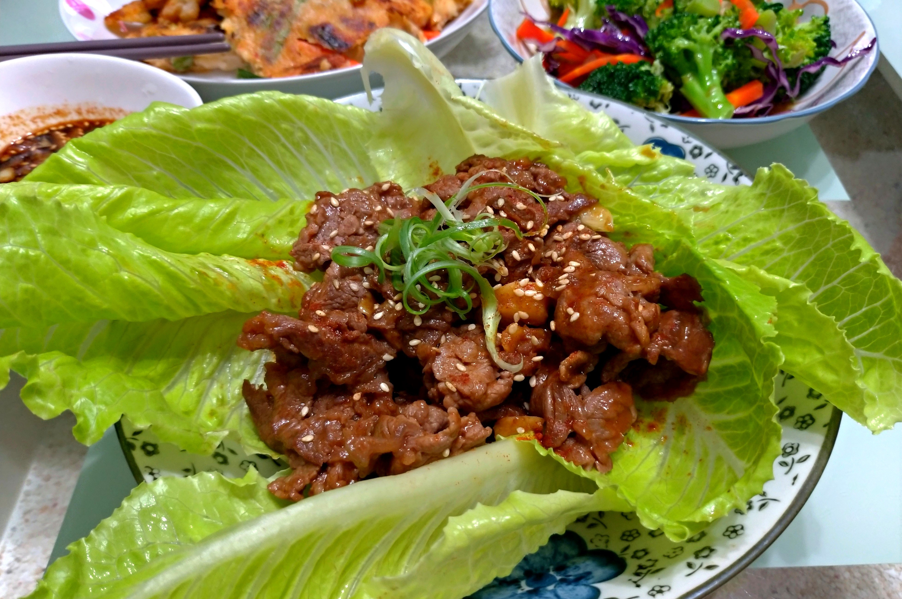
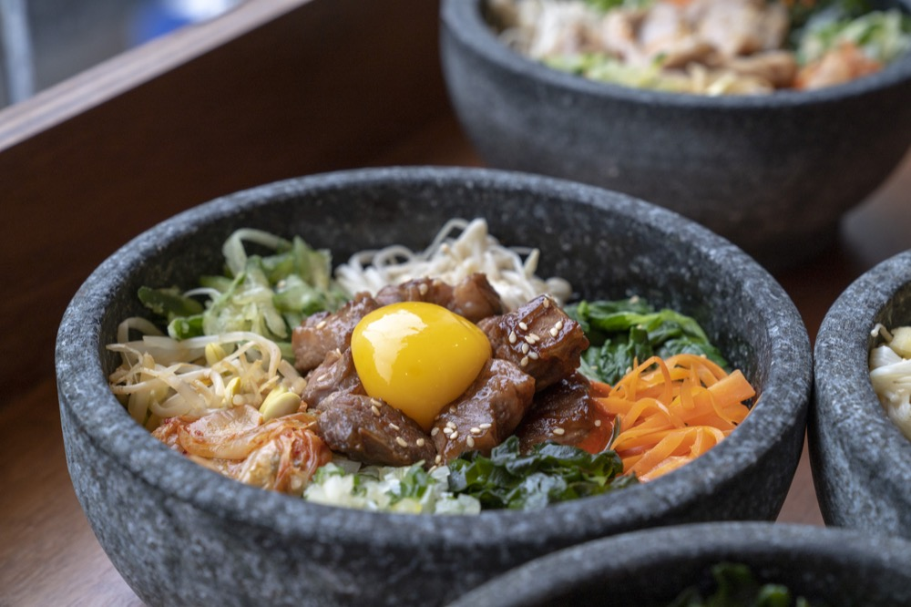
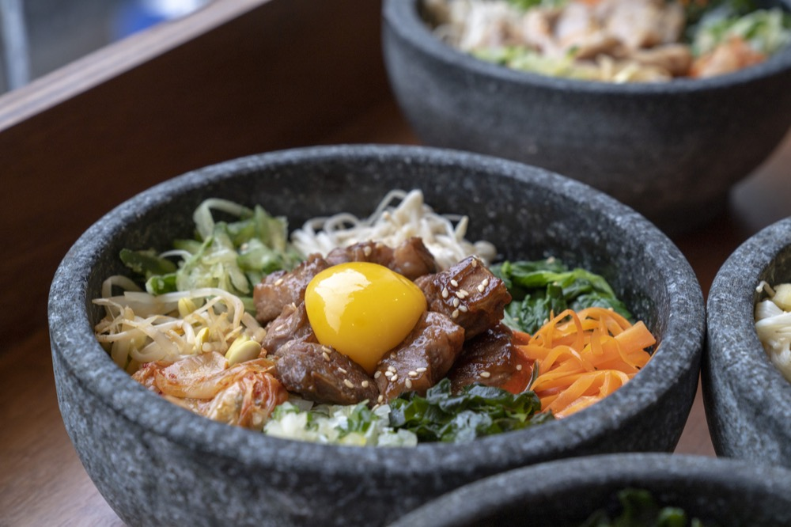

去韓國旅遊除了要掃蕩美妝產品和衣服外，最重要的就是吃！近幾年因為韓國娛樂產業的蓬勃發展，大家對韓國美食也產生了一定程度的嚮往。不論是路邊攤販就有的魚板、辣炒年糕，還是啤酒的絕佳夥伴－韓式炸雞，還有可以一口燒酒一口五花肉的韓式烤肉（光用想的就餓…）今天這個網站為大家整理了來到韓國首爾必吃的美食TOP5，吃貨們～筷子動起來！
不過在開始介紹韓國美食前，還是要給大家打一個預防針，韓國受到戰爭影響，除了許多料理本身仍保持著戰爭時為了營養、快速而有的攪拌食物外，大部分韓國餐廳出餐時的料理都仍是以「鐵碗、鐵盤、鐵鍋」上餐，因此在搜尋韓國美食時，大家很可能跟飄兒一樣因為照片非常不吸引人、擺盤糟糕而興趣缺缺，這時候請請看照片吃飯的人關起照片雷達，用心在食物本身，才能夠更通徹韓國料理的精華喔！
 



TOP1:韓式烤肉
在韓劇中200%會出現的主角之一，就是它～熱騰騰的鐵板碰上那有著肥滿油花的五花肉，一聽到那滋～～的聲音，口水就流個不停。 韓國烤肉除了有常見的五花肉還有醃漬過的排骨，烤肉採用醃製牛腩片，並在炭爐上加入洋蔥切片、青椒和大蒜一起烹煮，因而產生獨特的碳烤風味。在烤肉之前，牛肉片必須先在由醬油、芝麻油、黑胡椒、大蒜、洋蔥、薑和糖調合的醬料中醃製 2 至 4 小時，這樣才能入味並讓肉質軟嫩。 這道料理會以一片萵苣或菠菜來包裹烤肉，而且常沾著包飯醬 (辣醬)和泡菜一起吃。而這類排骨烤肉很特別的是會服務生會送上一大塊肉和一把剪刀，讓大家可以在肉烤到差不多的時候，剪成適合入口的大小，即可享用囉!
｜推薦韓國店家
石板上的金科長（돌판위에 김과장）：位於首爾地鐵的忠武路站大約十分鐘的腳程，六日都公休，別白跑了
河南烤肉店（하남돼지집 종각직영점）：位於首爾地鐵的鐘閣站四號出口附近，出站後沿著大馬路直走，到第二個巷子口右轉就會看到了
｜推薦台灣店家
新村站著吃烤肉:除了有特色的裝潢、吃飯法之外，他們的肉質、調味與服務也都有一定的水準。特別的是它是像韓國某些店一樣站著吃烤肉的，有機會可以試試看
Tree House楓樹韓國烤肉 :曾被CNN譽為世界上最好吃的韓式烤肉，不僅從小菜、烤肉到牛骨湯都道地的沒話說，在店內的裝潢與氛圍上也增添不少高級感
 


TOP2:韓式拌飯
除了石鍋拌飯，韓國還有一種傳統平民料理也是必吃，常常在韓國的家庭劇中出現，答案就是韓式拌飯。有別於熱騰騰的石鍋拌飯，韓式拌飯偏冷，用鋁碗盛裝，白飯鋪上滿繽紛配料，像是蕨菜、菠菜、桔梗、紅蘿蔔、芝麻、絞肉等等，最後放上一顆荷包蛋，加入韓式辣椒醬再淋上芝麻油就完成啦！若是在熱辣辣的夏季前往首爾，不如嘗試看看這款韓式拌飯，不僅吃得飽也能營養滿分。
｜推薦韓國店家
拌拌里：入口處有台自助售票機（有中文），可以依人數選擇入場券，操作完再用信用卡或是現金繳款就可以了！之後將門票交給店員就可以自己DIY做拌飯囉～
△小提醒：此店的配料是無限供應，但是浪費的話會被罰錢的，大家要珍惜食材！
｜推薦台灣店家
韓雞飢한지지韓國料理_內壢店:這家在興仁公園附近，建議先去預定再去吃，裡面小菜無限供應，CP值很高!
四米大石鍋拌飯:中山捷運逛街完肚子餓好選擇，主打石鍋拌飯，還有濃郁的辣炒年糕、海鮮煎餅小菜等等，CP值一樣很高!


TOP3:韓式炸雞
從熱門韓劇《鬼怪》到《愛的迫降》，韓國炸雞香噴噴的出鏡率，令不少台灣粉絲少女心噴發。近5年來陸續登台的韓國炸雞店，雖價格較高，卻是女性好友們聚餐的熱選，打破過去多為男生愛吃炸雞的印象。同時以炸雞它鮮嫩的肉質和調味得剛剛好的醬汁擄獲不少人的心。不論現場要排多久都一定要吃到，就算住在飯店或是旅館也要叫外送來品香一下。想要當個真正的韓國人，就捨棄你習慣的可樂配炸雞，改搭一杯冰鎮的罐裝啤酒吧！且韓國炸雞大多可以選擇要去骨還是雞腿，不論是愛啃骨頭或是懶得吐骨頭的人都可以好好享受～
｜推薦韓國店家
Outdark炸雞店：位在弘大商圈附近，店內的炸雞除了口味多樣，都會附上炸年糕、炸薯條和四種醬料，可以說是很值回票價。
黃色炸雞 慶熙大學分店：這間店最有名的就是可以一次吃到三種口味的「炸雞三位套餐」（原味炸雞、韓式辣醬、醬油炸雞），大約是三個人的份量，很適合與好姐妹一起分享！
｜推薦台灣店家
娘子炸雞:位於東區街頭的「娘子炸雞」是一間以路邊小攤為形式來營運的美食店。從基本的原味、辣味到特製的「蜂蜜」與「乾酪起司」，每種口味的評價都相當不錯！
bb.q CHICKEN:在韓劇中有著極高的出鏡率，好吃程度更是讓他們在全球擁有近2500間分店！除了有必點的韓式炸雞之外，辣炒年糕、海鮮煎餅等50多道餐點也絕對好吃到讓你滿意！


TOP4:辣炒年糕
只要看過韓劇的人應該對這道料理的韓文一點都不陌生，「都波奇」是韓國的攤販小吃，只要是在著名的觀光區都一定會看到的料理，同時也是一道很受歡迎的韓國小吃，從前是朝鮮宮廷料理中的一道菜，現在都能在當地的路邊攤或布帳馬車處買的到。用紙杯裝著的Q彈的年糕浸泡在辣辣甜甜的醬料裡，再加入一顆水煮蛋，拌開後，用牙籤插起放入嘴利，那種鹹鹹甜甜的滋味，總是讓人唇齒留香。
｜推薦韓國店家
首爾小吃：位在聖水洞的知名小吃店，不論何時前往都是人潮滿滿，幾乎都要排隊。除了招牌的辣炒年糕，他們的炸地瓜起士條也很有名，記得順便點！
｜推薦台灣店家
小韓食三輪車:是由在地的屏東女孩所開設的，騎著三輪餐車，在路邊煮好吃的韓食，選用韓國當地食材，將想念的味道放到食物裡，並將這份幸褔送給喜歡韓國味的大家
韓湘辣年糕-五妃店:是一間CP值超高的韓式小吃店，不超過百元的親民價錢，好吃之餘，服務態度又好，必點的還有「韓式手搖便當」和「韓式拌拌拉麵」


TOP5:韓式糖餅
介紹完這麼多鹹食，最後當然要來個甜點收尾。說到韓國的路邊小吃絕對不能忘記「糖餅」，吃過的人都說會上癮！黑糖餅有點像是我們的豬肉餡餅，但裡面包的是熱呼呼的黑糖。包了黑糖的麵團先炸到半熟，在客人點餐後再煎到全熟，有些攤販會有鹹的口味（可能搭配各種堅果或是肉），通常會用紙杯盛裝，拿到手上還熱呼呼的，吃起來非常有幸福感～而且雷率很低，不太容易吃到難吃的！
｜推薦韓國店家
三清洞黑糖餅：位在著名的三清洞附近，從安國站的一號出口步行大約十分鐘就可到達，路上可以看到紅色的指標，看到有著黃色底色的店就是了。
｜推薦台灣店家
三味糖餅:招牌吃經典款「蜂蜜堅果糖餅」和「冰淇淋糖餅」，外酥內軟，一口咬下的蜂蜜和肉桂香更是畫龍點睛，再加上堅果跟杏仁片，真的彷彿在韓國街頭啊！
台南大東夜市:每週一、二、五 18:00-
台南花園夜市:每週四、六、日 18:00-售完為止